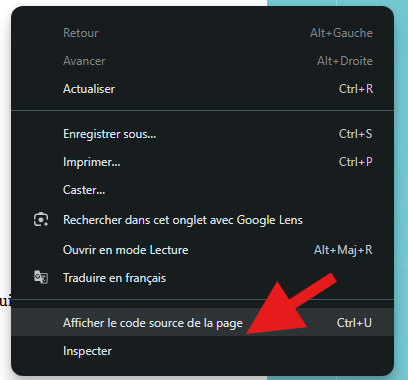
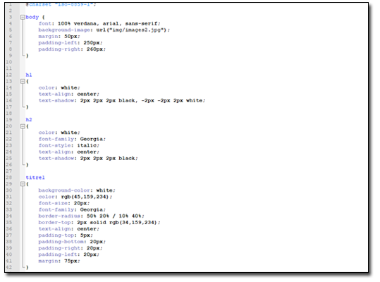
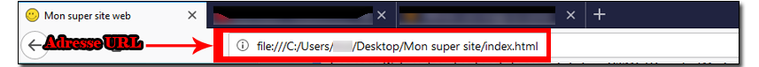
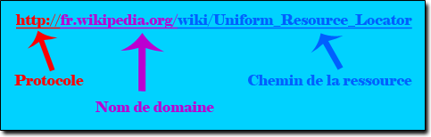
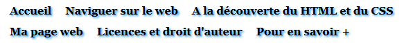
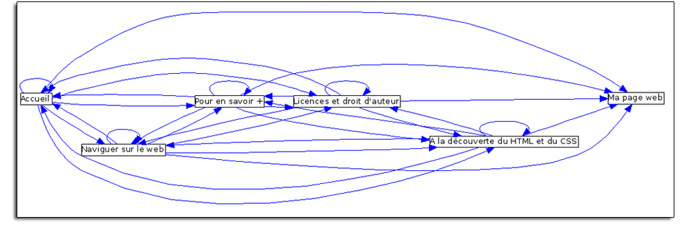
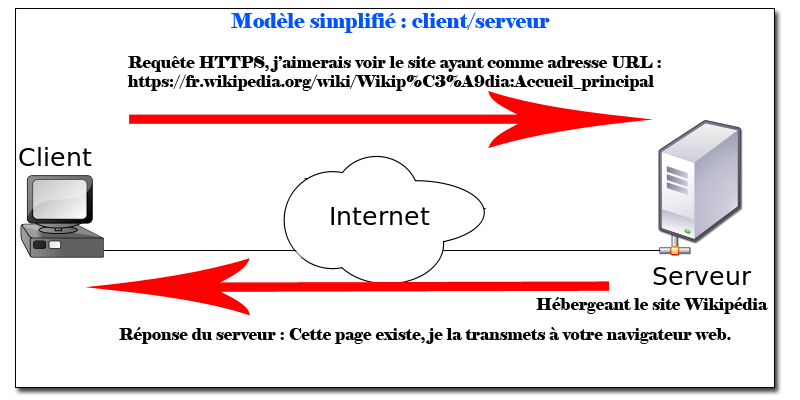

Avant de commencer, une petite vidéo qui explique la différence entre le web et internet :
Introduction : Normalisation de la présentation de l’information sur le web
- 1965 : invention et programmation du concept d’hypertexte par Ted Nelson;
- 1989 : naissance du web au CERN par Tim Berners Lee;
- 1993 : mise dans le domaine public, disponibilité du premier navigateur Mosaic; (Capture du navigateur)
- 1995 : mise à disposition de technologies pour le développement de site Web interactif (langage JavaScript) et dynamique (langage PHP); Ce sont deux langages que nous n'étudirons pas.
- 2001 : standardisation des pages grâce au DOM (Document Object Model); Une manière pour le navigateur de lire et d'afficher les informations d'une page web.
- 2010 : mise à disposition de technologies pour le développement d’applications sur mobiles.
Sur le Web, les textes, photos, vidéos, graphiques, sons, programmes sont exprimés et assemblés dans divers formats normalisés par un consortium mondial (W3C : World Wide Web Consortium), ce qui permet une circulation standardisée de ces informations. Les pages Web sont écrites dans le langage HTML (HypertextMarkupLanguage). Leur style graphique est défini dans le langage CSS (Cascading Style Sheets). Actuellement, vous êtes sur une page web écrite en langage HTML et CSS. Elle est lisible en utilisant un navigateur web. Vous pouvez observer, le code source HTML de cette page web en faisant un clique droit sur la page et en cliquant sur Code source de la page.

Afin de voir l'action du CSS sur une page web, vous pouvez cliquer ici. La page que vous venez d'ouvrir est la même la page d'acceuil du site mais sans CSS. Voici à quoi ressemble du CSS : (vous pouvez cliquer sur l'image pour ouvrir le fichier contenant le code source CSS du site web)
Les pages web ont une adresse unique, nommée URL (Uniform Ressource Locator). Cette adresse URL, nous est communiquée par la barre d'adresse de notre navigateur web.

Sur internet, les pages web sont accessibles en utilisant le protocole HTTP (Hypertext Transfer Protocol) ou sa version sécurisée HTTPS qui crypte les échanges. HTTPS permet au visiteur de vérifier l'identité du site web auquel il accède, grâce à un certificat d'authentification émis par une autorité tierce, réputée fiable (et faisant généralement partie de la liste blanche des navigateurs internet). Il garantit théoriquement la confidentialité et l'intégrité des données envoyées par l'utilisateur. L’affichage des pages est réalisé chez l’utilisateur par un programme appelé navigateur web. Parmi les navigateurs, vous devez sûrement connaitre des navigateurs comme Google Chrome, Safari, Opéra, Firefox ou encore Internet Explorer. Ces deux protocoles de communication comminiquent avec des serveurs web, qui eux hébergent des pages web sur un réseau. Le plus courament sur le réseau internet. Il existe différents protocoles de communication. mailto:prof@likes.org, avec un protocole mailto qui permet de se connecter au serveur mail avec comme URL mailto:prof@likes.org. ftp://ftp.mozilla.org/pub/mozilla.org/firefox/releases/ avec un protocole ftp (serveur de gestion de fichier) qui permet de se connecter au serveur ftp avec comme URL ftp://ftp.mozilla.org/pub/mozilla.org/firefox/releases/. Par ailleurs, on peut observer que sur notre barre d'adresse, le protocole de l'URL n'est pas un protocole HTTP ou HTTPS. C'est un protocole file:// qui appelle simplement les fichiers disponible sur notre ordinateur. En effet, cette page web n'est pas hébergée sur le web mais localement sur votre ordinateur. On n'a donc pas besoin d'utliser sur un protocole HTTP ou HTTPS pour y accéder. Toute adresse URL se décompose comme ceci :
Un hypertexte est un texte augmenté contenant comme information une adresse URL. On l'utilise notament pour créer des liens entre des pages web. Exemple 1 : Cliquer ici est un lien hypertexte qui va vous rediriger vers la page web du site Le Likès d'adresse URL http://www.likes.org/. Exemple 2 : Un lien hypertexte avec un protocole mailto pour communiquer avec l'adresse mail d'adresse URL mailto:prof@likes.org; Contacter : prof@likes.org. Comme le navigateur web ne s'occupe pas des protocoles mailto, c'est outlook qui s'ouvre pour communiquer avec le serveur mail. Les liens hypextextes sont utlisés pour créer des liens entre des pages web. Par exemple sur ce site on peut distinguer un menu; comportant 7 liens hypertextes. Répétés sur chacune des pages afin de naviguer entres-elles. A l'exeption d'une page web.

On peut représenter les liens hypertextes entre les pages par un graphe orienté. La flèche symbolise le lien qui indique que l'on peut aller de telle page vers telle page.
Le Web s’appuie sur le dialogue entre clients et serveurs. L’interaction est à l’initiative des clients qui envoient des requêtes HTTP ou HTTPS aux serveurs.

De manière simplifié, le client est l'utilisateur qui souhaite voir une page web. Le contenu de cette page web est stocké sur ce que l'on appelle un serveur web. Le client envoi une requête (demande) HTTP ou HTTPS pour voir la page s'afficher sur son navigateur web.Répondre aux questions suivantes :
1) Décomposer l'URL du site : http://www.likes.org/Espace-Numerique 2) Décomposer l'URL de la video : https://www.youtube.com/watch?v=TeiUyeXjzJ4 3) Quel est le langage web qui permet d'écrire du contenu sur une page web ? 4) Quel est le langage web qui permet d'éditer le style graphique d'une page web ? 5) Quel est la différence entre le protocole HTTP et le protocole HTTPS ? 6) Quel est le rôle d'un lien hypertexte sur un site web ? 7) Le menu de navigation du site comportant 7 liens hypertextes. Répétés sur chacune des pages afin de naviguer entre-elles. A l'exeption d'une page. Laquelle ? Donner son adresse URL.